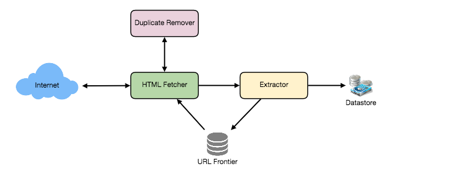
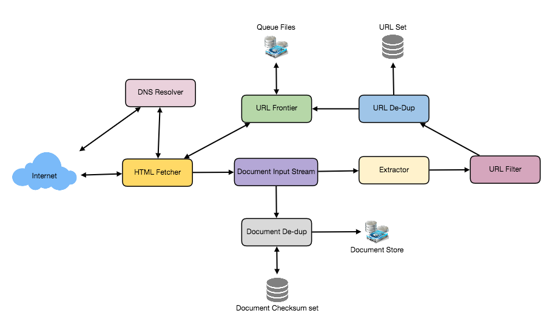

Designing a Web Crawler
Designing a scalable, extensible Web Crawler that systematically browses and downloads the World Wide Web.
In this lesson
Let's design a Web Crawler that will systematically browse and download the World Wide Web. Web crawlers are also known as web spiders, robots, worms, walkers, and bots.
What is a Web Crawler?
A web crawler is a software program which browses the World Wide Web in a methodical and automated manner. It collects documents by recursively fetching links from a set of starting pages. Many sites, particularly search engines, use web crawling as a means of providing up-to-date data. Search engines download all the pages to create an index on them to perform faster searches.
Some other uses of web crawlers are:
- To test web pages and links for valid syntax and structure.
- To monitor sites to see when their structure or contents change.
- To maintain mirror sites for popular Web sites.
- To search for copyright infringements.
- To build a special-purpose index, e.g., one that has some understanding of the content stored in multimedia files on the Web.
Requirements and Goals of the System
Let's assume we need to crawl all the web.
Scalability: Our service needs to be scalable such that it can crawl the entire Web, and can be used to fetch hundreds of millions of Web documents.
Extensibility: Our service should be designed in a modular way, with the expectation that new functionality will be added to it. There could be newer document types that needs to be downloaded and processed in the future.
Some Design Considerations
Crawling the web is a complex task, and there are many ways to go about it. We should be asking a few questions before going any further:
Is it a crawler for HTML pages only? Or should we fetch and store other types of media, such as sound files, images, videos, etc.? This is important because the answer can change the design. If we are writing a general-purpose crawler to download different media types, we might want to break down the parsing module into different sets of modules: one for HTML, another for images, another for videos, where each module extracts what is considered interesting for that media type.
Let's assume for now that our crawler is going to deal with HTML only, but it should be extensible and make it easy to add support for new media types.
What protocols are we looking at? HTTP? What about FTP links? What different protocols should our crawler handle? For the sake of the exercise, we will assume HTTP. Again, it shouldn't be hard to extend the design to use FTP and other protocols later.
What is the expected number of pages we will crawl? How big will the URL database become? Assuming we need to crawl one billion websites. Since a website can contain many, many URLs, let's assume an upper bound of 15 billion different web pages that will be reached by our crawler.
What is 'RobotsExclusion' and how should we deal with it? Courteous Web crawlers implement the Robots Exclusion Protocol, which allows Webmasters to declare parts of their sites off limits to crawlers. The Robots Exclusion Protocol requires a Web crawler to fetch a special document called robots.txt, containing these declarations from a Web site before downloading any real content from it.
Capacity Estimation and Constraints
If we want to crawl 15 billion pages within four weeks, how many pages do we need to fetch per second?
15B / (4 weeks * 7 days * 86400 sec) ~= 6200 pages/sec
What about storage? Page sizes vary a lot, but as mentioned above since we will be dealing with HTML text only, let's assume an average page size be 100KB. With each page if we are storing 500 bytes of metadata, total storage we would need:
15B * (100KB + 500) ~= 1.5 petabytes
Assuming a 70% capacity model (we don't want to go above 70% of the total capacity of our storage system), total storage we will need:
1.5 petabytes / 0.7 ~= 2.14 petabytes
High Level design
The basic algorithm executed by any Web crawler is to take a list of seed URLs as its input and repeatedly execute the following steps.
- Pick a URL from the unvisited URL list.
- Determine the IP Address of its host-name.
- Establishing a connection to the host to download the corresponding document.
- Parse the document contents to look for new URLs.
- Add the new URLs to the list of unvisited URLs.
- Process the downloaded document, e.g., store it or index its contents, etc.
- Go back to step 1
How to crawl?
Breadth first or depth first? Breadth-first search (BFS) is usually used. However, Depth First Search (DFS) is also utilized in some situations, such as if your crawler has already established a connection with the website, it might just DFS all the URLs within this website to save some handshaking overhead.
Path-ascending crawling: Path-ascending crawling can help discover a lot of isolated resources or resources for which no inbound link would have been found in regular crawling of a particular Web site. In this scheme, a crawler would ascend to every path in each URL that it intends to crawl. For example, when given a seed URL of http://foo.com/a/b/page.html, it will attempt to crawl /a/b/, /a/, and /.
Difficulties in implementing efficient web crawler
There are two important characteristics of the Web that makes Web crawling a very difficult task:
1. Large volume of Web pages: A large volume of web page implies that web crawler can only download a fraction of the web pages at any time and hence it is critical that web crawler should be intelligent enough to prioritize download.
2. Rate of change on web pages. Another problem with today's dynamic world is that web pages on the internet change very frequently, as a result, by the time the crawler is downloading the last page from a site, the page may change, or a new page has been added to the site.
A bare minimum crawler needs at least these components:
1. URL frontier: To store the list of URLs to download and also prioritize which URLs should be crawled first.
2. HTTP Fetcher: To retrieve a web page from the server.
3. Extractor: To extract links from HTML documents.
4. Duplicate Eliminator: To make sure same content is not extracted twice unintentionally.
5. Datastore: To store retrieve pages and URL and other metadata.

Detailed Component Design
Let's assume our crawler is running on one server, and all the crawling is done by multiple working threads, where each working thread performs all the steps needed to download and process a document in a loop.
The first step of this loop is to remove an absolute URL from the shared URL frontier for downloading. An absolute URL begins with a scheme (e.g., "HTTP"), which identifies the network protocol that should be used to download it. We can implement these protocols in a modular way for extensibility, so that later if our crawler needs to support more protocols, it can be easily done. Based on the URL's scheme, the worker calls the appropriate protocol module to download the document. After downloading, the document is placed into a Document Input Stream (DIS). Putting documents into DIS will enable other modules to re-read the document multiple times.
Once the document has been written to the DIS, the worker thread invokes the dedupe test to determine whether this document (associated with a different URL) has been seen before. If so, the document is not processed any further, and the worker thread removes the next URL from the frontier.
Next, our crawler needs to process the downloaded document. Each document can have a different MIME type like HTML page, Image, Video, etc. We can implement these MIME schemes in a modular way so that later if our crawler needs to support more types, we can easily implement them. Based on the downloaded document's MIME type, the worker invokes the process method of each processing module associated with that MIME type.
Furthermore, our HTML processing module will extract all links from the page. Each link is converted into an absolute URL and tested against a user-supplied URL filter to determine if it should be downloaded. If the URL passes the filter, the worker performs the URL-seen test, which checks if the URL has been seen before, namely, if it is in the URL frontier or has already been downloaded. If the URL is new, it is added to the frontier.

Let's discuss these components one by one, and see how they can be distributed onto multiple machines:
1. The URL frontier: The URL frontier is the data structure that contains all the URLs that remain to be downloaded. We can crawl by performing a breadth-first traversal of the Web, starting from the pages in the seed set. Such traversals are easily implemented by using a FIFO queue.
Since we'll be having a huge list of URLs to crawl, we can distribute our URL frontier into multiple servers. Let's assume on each server we have multiple worker threads performing the crawling tasks. Let's also assume that our hash function maps each URL to a server which will be responsible for crawling it.
Following politeness requirements must be kept in mind while designing a distributed URL frontier:
- Our crawler should not overload a server by downloading a lot of pages from it.
- We should not have multiple machines connecting to a web server.
To implement this politeness constraint, our crawler can have a collection of distinct FIFO sub-queues on each server. Each worker thread will have its separate sub-queue, from which it removes URLs for crawling. When a new URL needs to be added, the FIFO sub-queue in which it is placed will be determined by the URL's canonical hostname. Our hash function can map each hostname to a thread number. Together, these two points imply that at most one worker thread will download documents from a given Web server and also by using FIFO queue it'll not overload a Web server.
How big our URL frontier would be? The size would be in the hundreds of millions of URLs. Hence, we need to store our URLs on disk. We can implement our queues in such a way that they have separate buffers for enqueuing and dequeuing. Enqueue buffer, once filled will be dumped to the disk, whereas dequeue buffer will keep a cache of URLs that need to be visited, it can periodically read from disk to fill the buffer.
2. The fetcher module: The purpose of a fetcher module is to download the document corresponding to a given URL using the appropriate network protocol like HTTP. As discussed above webmasters create robots.txt to make certain parts of their websites off limits for the crawler. To avoid downloading this file on every request, our crawler's HTTP protocol module can maintain a fixed-sized cache mapping host-names to their robots exclusion rules.
3. Document input stream: Our crawler's design enables the same document to be processed by multiple processing modules. To avoid downloading a document multiple times, we cache the document locally using an abstraction called a Document Input Stream (DIS).
A DIS is an input stream that caches the entire contents of the document read from the internet. It also provides methods to re-read the document. The DIS can cache small documents (64 KB or less) entirely in memory, while larger documents can be temporarily written to a backing file.
Each worker thread has an associated DIS, which it reuses from document to document. After extracting a URL from the frontier, the worker passes that URL to the relevant protocol module, which initializes the DIS from a network connection to contain the document's contents. The worker then passes the DIS to all relevant processing modules.
4. Document Dedupe test: Many documents on the Web are available under multiple, different URLs. There are also many cases in which documents are mirrored on various servers. Both of these effects will cause any Web crawler to download the same document contents multiple times. To prevent processing a document more than once, we perform a dedupe test on each document to remove duplication.
To perform this test, we can calculate a 64-bit checksum of every processed document and store it in a database. For every new document, we can compare its checksum to all the previously calculated checksums to see if the document has been seen before. We can use MD5 or SHA to calculate these checksums.
How big would be the checksum store? If the whole purpose of our checksum store is to do dedupe, then we just need to keep a unique set containing checksums of all previously processed document. Considering 15 billion distinct web pages, we would need:
15B * 8 bytes => 120 GB
Although this can fit into a modern-day server's memory, if we don't have enough memory available, we can keep smaller LRU based cache on each server with everything in a persistent storage. The dedupe test first checks if the checksum is present in the cache. If not, it has to check if the checksum resides in the back storage. If the checksum is found, we will ignore the document. Otherwise, it will be added to the cache and back storage.
5. URL filters: The URL filtering mechanism provides a customizable way to control the set of URLs that are downloaded. This is used to blacklist websites so that our crawler can ignore them. Before adding each URL to the frontier, the worker thread consults the user-supplied URL filter. We can define filters to restrict URLs by domain, prefix, or protocol type.
6. Domain name resolution: Before contacting a Web server, a Web crawler must use the Domain Name Service (DNS) to map the Web server's hostname into an IP address. DNS name resolution will be a big bottleneck of our crawlers given the amount of URLs we will be working with. To avoid repeated requests, we can start caching DNS results by building our local DNS server.
7. URL dedupe test: While extracting links, any Web crawler will encounter multiple links to the same document. To avoid downloading and processing a document multiple times, a URL dedupe test must be performed on each extracted link before adding it to the URL frontier.
To perform the URL dedupe test, we can store all the URLs seen by our crawler in canonical form in a database. To save space, we do not store the textual representation of each URL in the URL set, but rather a fixed-sized checksum.
To reduce the number of operations on the database store, we can keep an in-memory cache of popular URLs on each host shared by all threads. The reason to have this cache is that links to some URLs are quite common, so caching the popular ones in memory will lead to a high in-memory hit rate.
How much storage we would need for URL's store? If the whole purpose of our checksum is to do URL dedupe, then we just need to keep a unique set containing checksums of all previously seen URLs. Considering 15 billion distinct URLs and 2 bytes for checksum, we would need:
15B * 2 bytes => 30 GB
Can we use bloom filters for deduping? Bloom filters are a probabilistic data structure for set membership testing that may yield false positives. A large bit vector represents the set. An element is added to the set by computing 'n' hash functions of the element and setting the corresponding bits. An element is deemed to be in the set if the bits at all 'n' of the element's hash locations are set. Hence, a document may incorrectly be deemed to be in the set, but false negatives are not possible.
The disadvantage to using a bloom filter for the URL seen test is that each false positive will cause the URL not to be added to the frontier, and therefore the document will never be downloaded. The chance of a false positive can be reduced by making the bit vector larger.
8. Checkpointing: A crawl of the entire Web takes weeks to complete. To guard against failures, our crawler can write regular snapshots of its state to disk. An interrupted or aborted crawl can easily be restarted from the latest checkpoint.
Fault tolerance
We should use consistent hashing for distribution among crawling servers. Extended hashing will not only help in replacing a dead host but also help in distributing load among crawling servers.
All our crawling servers will be performing regular checkpointing and storing their FIFO queues to disks. If a server goes down, we can replace it. Meanwhile, extended hashing should shift the load to other servers.
Data Partitioning
Our crawler will be dealing with three kinds of data: 1) URLs to visit 2) URL checksums for dedupe 3) Document checksums for dedupe.
Since we are distributing URLs based on the hostnames, we can store these data on the same host. So, each host will store its set of URLs that need to be visited, checksums of all the previously visited URLs and checksums of all the downloaded documents. Since we will be using extended hashing, we can assume that URLs will be redistributed from overloaded hosts.
Each host will perform checkpointing periodically and dump a snapshot of all the data it is holding into a remote server. This will ensure that if a server dies down, another server can replace it by taking its data from the last snapshot.
Crawler Traps
There are many crawler traps, spam sites, and cloaked content. A crawler trap is a URL or set of URLs that cause a crawler to crawl indefinitely. Some crawler traps are unintentional. For example, a symbolic link within a file system can create a cycle. Other crawler traps are introduced intentionally. For example, people have written traps that dynamically generate an infinite Web of documents. The motivations behind such traps vary. Anti-spam traps are designed to catch crawlers used by spammers looking for email addresses, while other sites use traps to catch search engine crawlers to boost their search ratings.
AOPIC algorithm (Adaptive Online Page Importance Computation), can help mitigating common types of bot-traps. AOPIC solves this problem by using a credit system.
- Start with a set of N seed pages.
- Before crawling starts, allocate a fixed X amount of credit to each page.
- Select a page P with the highest amount of credit (or select a random page if all pages have the same amount of credit).
- Crawl page P (let's say that P had 100 credits when it was crawled).
- Extract all the links from page P (let's say there are 10 of them).
- Set the credits of P to 0.
- Take a 10% "tax" and allocate it to a Lambda page.
- Allocate an equal amount of credits each link found on page P from P's original credit after subtracting the tax, so: (100 (P credits) - 10 (10% tax))/10 (links) = 9 credits per each link.
- Repeat from step 3.
Since the Lambda page continuously collects the tax, eventually it will be the page with the largest amount of credit, and we'll have to "crawl" it. By crawling the Lambda page, we just take its credits and distribute them equally to all the pages in our database.
Since bot traps only give internal links credits and they rarely get credit from the outside, they will continually leak credits (from taxation) to the Lambda page. The Lambda page will distribute that credits out to all the pages in the database evenly, and upon each cycle, the bot trap page will lose more and more credits until it has so little credits that it almost never gets crawled again. This will not happen with good pages because they often get credits from backlinks found on other pages.
Deeper analysis: trade-offs & failure modes
A real planet-scale crawler (Googlebot, Bingbot, Common Crawl's Apache Nutch, Internet Archive's Heritrix) is dominated by two forces the high-level design glosses over: politeness (you must not look like a DDoS to any single origin) and prioritization (you can never crawl everything, so you crawl the right things). Almost every design decision below is a consequence of one of those two.
The crawl frontier is two queues, not one
The naive "FIFO of URLs" hides a tension: BFS gives good coverage and naturally finds high-authority pages early (they have many inbound links), but a pure global FIFO will hammer a popular host because thousands of its URLs cluster together in the queue. The Mercator/Najork design that every modern crawler descends from splits the frontier into two stages:
- Front queues (priority): F queues, one per priority band. A prioritizer assigns each URL a band from a score (PageRank/host authority, change rate, depth, whether it's a sitemap entry). High-priority URLs land in low-numbered queues.
- Back queues (politeness): B queues, with the invariant that each back queue holds URLs for exactly one host. A back-queue selector picks the next back queue whose host is allowed to be hit (its earliest-allowed time has passed), pulls a URL, fetches it, and refills the back queue from the front queues. A min-heap keyed on "next-eligible-fetch-time per host" drives the scheduler.
URL dedup at 15B scale: why a Bloom filter, and its sharp edges
The "URL-seen" set is the hottest data structure in the crawler — every extracted link hits it, and there are ~50–100 links per page. Storing 15B canonical URLs as full strings is hundreds of GB and slow; storing 64-bit checksums (the doc's approach) is ~120GB and forces a disk/DB hop on misses. A Bloom filter compresses membership to a few bits per element entirely in RAM.
| Approach | Memory for 15B URLs | Error mode | Notes |
|---|---|---|---|
| Full URL strings in a hash set | ~1–2 TB | None | Needs sharding + disk; cache-miss latency dominates |
| 64-bit checksum set | ~120 GB | ~0 (collision negligible) | Doc's choice; still big, needs LRU cache + backing store |
| Bloom filter, p=1% | ~17 GB (~9.6 bits/elem) | False positive → URL silently dropped | RAM-resident, O(k) hashes per lookup, no deletes |
| Bloom filter, p=0.1% | ~26 GB (~14.4 bits/elem) | False positive | Lower drop rate, more RAM |
DNS is the silent bottleneck
The doc flags DNS as "a big bottleneck" but understates it: standard getaddrinfo/glibc resolution is synchronous and blocks the worker thread, and a cold lookup can take 50–500ms — far longer than the fetch itself for a small page. At 6,200 pages/sec that's thousands of concurrent blocked threads. Real crawlers run an asynchronous, custom DNS resolver (Mercator built its own) plus an aggressive local cache keyed on hostname, honoring TTLs but often extending them because crawl correctness tolerates slightly stale IPs. They also pre-resolve hosts as soon as a URL enters the frontier, not at fetch time, so the IP is warm by the time the back-queue scheduler releases the URL.
robots.txt: cache it, respect it, and handle its failure modes
- Fetch
/robots.txtonce per host and cache the parsed rules (Googlebot caches up to ~24h). Without caching you'd double your request volume to every host. - Fail-open vs fail-closed: if robots.txt returns 5xx or times out, polite crawlers treat the host as temporarily disallowed (fail-closed) rather than crawling freely — a server erroring out is a signal to back off. A 404 means "no restrictions" (fail-open).
- Respect
Crawl-delaydirectives and pull seed URLs from declared sitemaps — sitemaps are the cheapest, highest-signal source of fresh URLs and let you skip blind link discovery.
Distributed crawling & coordination
Partition the frontier by hash of canonical hostname, not by URL. This is non-negotiable: it co-locates all URLs of one host on one node, which (a) keeps the per-host politeness invariant local — no cross-node coordination to rate-limit a host — and (b) keeps that host's robots.txt cache, DNS entry, and back queue on one machine. Use consistent hashing so adding/removing a crawl node reshuffles only ~1/N of hosts. Coordination needs are deliberately minimal — the strength of host-partitioning is that nodes barely talk to each other; cross-node traffic is just extracted links being routed to their owning node (often via a durable queue — see 08 Queues).
Crawler traps
Traps are URLs that generate infinite unique links: calendars with "next month" forever, faceted-search URLs (?color=red&size=9&sort=price... in every combination), session IDs baked into paths, or symlink cycles. Defenses layer up: a max crawl depth / path-length limit, a per-host URL budget, query-parameter canonicalization (strip session IDs, sort params, drop tracking params), and detecting near-duplicate content via shingling/SimHash so a trap producing cosmetically-different pages still gets caught by the document-dedup test. The doc's AOPIC credit system is the elegant economic defense: traps only receive internal credit, leak a 10% tax to the Lambda page every cycle, and starve until they're effectively never selected — while genuinely linked pages keep earning external credit.
Freshness vs coverage, and storing the content
You can't crawl 15B pages and keep them all fresh — these compete for the same fetch budget. Mature crawlers estimate each page's change rate (from observed diffs across past crawls, HTTP Last-Modified/ETag conditional GETs, and sitemap lastmod) and schedule re-crawls proportionally: a news homepage every few minutes, a static PDF once a quarter. Conditional GETs (If-Modified-Since) let unchanged pages return 304 Not Modified with no body, reclaiming bandwidth for new coverage.
For the ~2 PB of crawled content, the right home is append-only blob/object storage (S3-class, or WARC files like Common Crawl ships), not a relational DB — you write once, read for indexing, and rarely update. Metadata and checksums live in a separate indexed store. Heavy compression (gzip/zstd on HTML text gets 5–8x) is what turns 1.5 PB raw into something economical. Downstream indexing/PageRank then runs as a batch / big-data job over those blobs, decoupled from the live crawl loop.
Principal-level mastery check
- Can you explain why the frontier is split into front (priority) and back (politeness) queues, and what invariant the back queues enforce per host? If you used a single global FIFO instead, what failure would you observe against a popular domain?
- Why does politeness make parallelism across hosts — not request speed against any one host — the thing that delivers 6,200 pages/sec? How would you compute the per-host delay from a page's own fetch latency?
- Why is a Bloom filter the right structure for the URL-seen test, given that its only error is a false positive? Can you state concretely what a false positive costs the crawler, and why the same false-positive asymmetry would be unacceptable in a payment-dedup system?
- Why must the distributed frontier be partitioned by hash of hostname rather than by URL? What three things does host-partitioning keep local, and why does that minimize cross-node coordination?
- Why does hash-by-host create a hotspot, and what does the power-law distribution of web hosts have to do with it? Name two mitigations.
- Can you describe three distinct kinds of crawler trap and the layered defenses (depth limits, URL budgets, parameter canonicalization, AOPIC credit) that contain them? Why does AOPIC specifically starve a trap over time?
- Why does freshness compete with coverage for the same budget, and how do change-rate estimation plus conditional GETs (
304 Not Modified) let you reclaim fetch capacity?